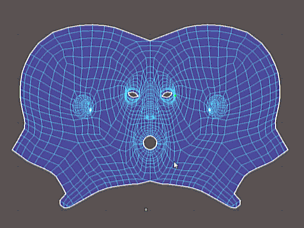

若要打开“涂抹 UV 工具”(Smear UV Tool)，请从“UV 工具包”(UV Toolkit)的部分中选择它，或从“UV 编辑器”(UV Editor)菜单中选择。
“涂抹 UV 工具”(Smear UV Tool)按与曲面上笔划方向的原始位置相切的方向移动 UV。
选择“工具 > 涂抹”(Tools > Smear) >  时，在“工具设置”(Tool Settings)窗口中将显示以下选项。
时，在“工具设置”(Tool Settings)窗口中将显示以下选项。
笔刷(Brush)
- 大小(Size)
- 设置工具的半径。
热键：按住 B 键并拖动或者使用鼠标中键 (MMB) 向左/向右拖动可调整笔刷大小。
- 强度(Strength)
- 确定工具影响曲面的程度。
热键：按住 M 键拖动或使用鼠标中键向上/向下拖动可调整笔刷强度。
- 反转(Invert)
- 反转“涂抹 UV 工具”(Smear UV Tool)的功能。按笔划的相反方向拉动曲面。
热键：Ctrl 键
衰减(Falloff)
控制 UV 工具的剖面（横截面）。衰减控制工具的强度如何从笔刷中心向其外边缘减弱。工具将衰减值指定给笔刷半径内的每个 UV（根据其与中心点的距离）。UV 距离中心点越远，应用的衰减就越多。以下衰减类型使用不同的方法来测量此距离。另请参见调整工具衰减。
- 曲面/体积(Surface/Volume)
-
“曲面/体积”(Surface/Volume)是“曲面”(Surface)和“体积”(Volume)衰减类型的组合。为确定影响哪些顶点，笔刷沿曲面运动，直到它到达曲面结尾或者其半径的边缘（以首先满足的条件为准）。为确定每个顶点的衰减值，笔刷从笔刷中心向每个顶点绘制一条直线。
- 表面(Surface)
- 通过在其中心点处开始并沿曲面运动以查找顶点，笔刷了测量距离。它将搜索顶点，直至到达曲面结尾或者笔刷半径的边缘（以首先满足的条件为准）。根据顶点与中心点的距离，为顶点指定衰减值。希望雕刻工具与曲面一致时，曲面衰减很有用。例如，可以使用此衰减模式，将角色脸部的上嘴唇和下嘴唇分离。
注： 与使用其他衰减类型的雕刻相比，使用“曲面”(Surface)衰减的雕刻可能会导致性能降低。
- 体积(Volume)
- （默认）通过从笔刷中心向笔刷半径内的每个 UV 绘制一条直线，笔刷测量了距离。根据 UV 与中心点的距离，为 UV 指定衰减值。体积衰减影响笔刷半径内的所有壳。
- 曲线(Curve)
-
控制 UV 工具的剖面（横截面）。衰减曲线确定工具强度如何从中心向其外边缘减弱。
- 捕捉到栅格(Snap to Grid)
-
将点约束到“衰减曲线”(Falloff Curve)栅格。
- 重置曲线(Reset Curve)
- 将衰减曲线重置为其默认形状。
- 保存自定义曲线(Save Custom Curve)
-
将当前的衰减曲线保存到“自定义曲线”(Custom Curve)预设。
- 预设曲线(Preset Curve)
-
允许您通过从频繁使用的形状中进行选择来快速设置“衰减曲线”(Falloff curve)。
- 自定义曲线(Custom Curve)
-
允许您通过从自定义形状中进行选择来快速设置“曲线”(Curve)。
按住 Ctrl 键并单击自定义曲线图像可删除它。
显示(Display)
- 在笔划期间显示刷环(Show brush ring during stroke)
- 绘制笔划时始终显示刷环。禁用此选项可始终隐藏刷环。